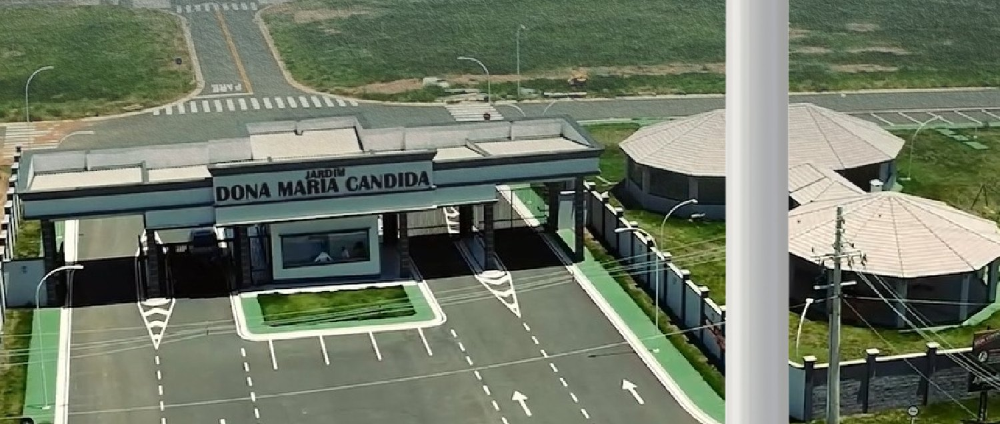
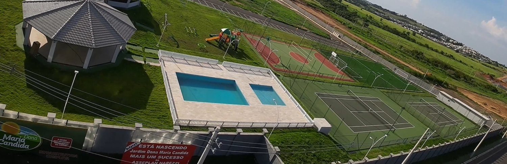
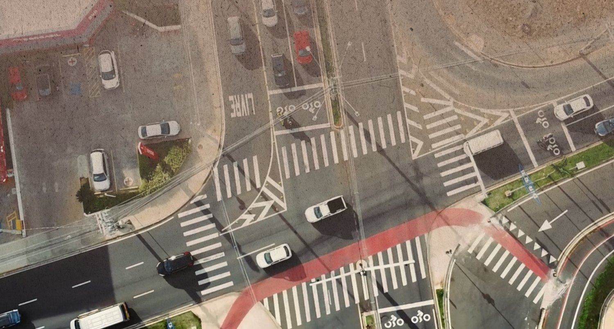
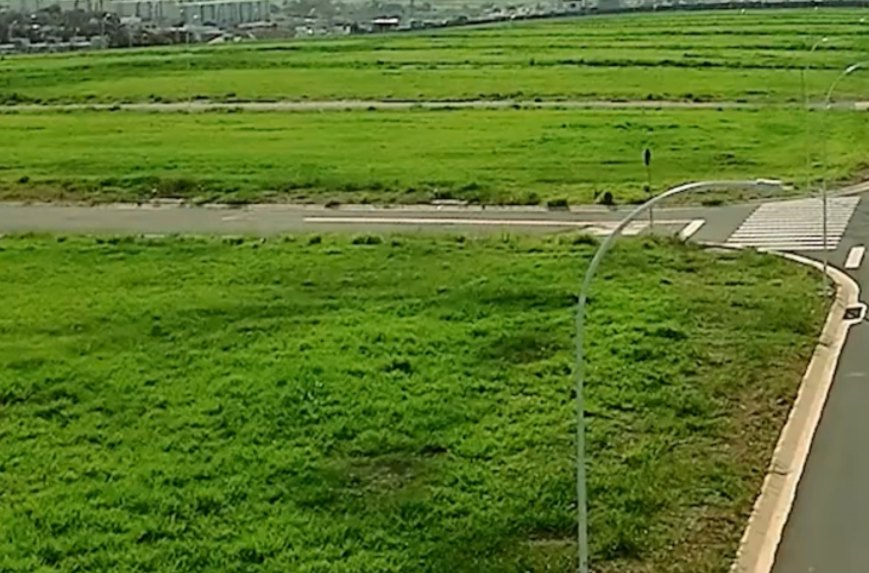

Indaiatuba/SP · Asseplan Narezzi
Lotes de 300 a 472 m² com a infraestrutura pronta: asfalto, calçada, iluminação e rede de água e esgoto já executados. Na lista de 08/09/2026 restam 180 lotes dos 771 do projeto. Entrada de 10% e saldo em até 60 parcelas.
A partir de R$ 600.000lote de 300 m² · tabela Asseplan Narezzi válida a partir de 01/07/2025 — confirme o valor atual
Ver lotes e valoresO empreendimento
O Jardim Dona Maria Cândida é um loteamento fechado da Asseplan Narezzi em Indaiatuba. O projeto tem 771 lotes a partir de 300 m² e, diferente de um lançamento na planta, chega ao comprador com a infraestrutura concluída — por isso a loteadora o anuncia como pronto para construir.
São dois acessos com portaria e segurança 24 horas. O material da loteadora destaca ainda que o traçado não tem vielas sanitárias, aquelas passagens estreitas entre quadras que costumam separar os fundos dos lotes.
A Asseplan Narezzi atua em Indaiatuba desde 1975 e registra o CRECI J 4447-9. O plantão de vendas fica na Av. Presidente Vargas, 787.
O loteamento
Fotos do material da Asseplan Narezzi. A área de lazer e as ruas já estão executadas; o adensamento depende das casas que cada comprador construir.




O que já está pronto
Num loteamento na planta, o comprador paga durante a obra e só pode construir depois que o loteamento é liberado — o que costuma levar anos. Aqui a etapa de infraestrutura já foi vencida: quem compra pode entrar com o projeto na prefeitura e começar a obra da casa.
Isso também muda o risco: não há prazo de entrega para cumprir nem cronograma para acompanhar. O que existe é o lote, com rua, calçada e rede na porta.
Lazer
A lista abaixo é a do material da loteadora. A área de lazer já está construída.
A taxa mensal da associação de moradores não consta do material recebido. Confirme no atendimento.
Pagamento
A condição publicada pela loteadora é de 10% de entrada e o saldo em até 60 parcelas, direto com a Asseplan Narezzi — sem passar por banco.
No lote de 300 m² a R$ 600.000, a entrada de 10% fica em R$ 60.000. O valor de cada parcela e a correção aplicada constam da tabela vigente; peça a simulação para o lote que interessa.
Ficha técnica
Perguntas frequentes
Em Indaiatuba, no interior de São Paulo. O loteamento aparece no nosso mapa de lotes, com os 180 disponíveis posicionados um a um. O plantão de vendas da Asseplan Narezzi fica na Av. Presidente Vargas, 787.
Sim. As obras de infraestrutura do loteamento estão concluídas — é o que a loteadora chama de pronto para construir. Diferente de um lançamento na planta, não há prazo de entrega a cumprir antes de iniciar a casa.
Na lista de 08/09/2026 constam 180 lotes disponíveis, dos 771 do projeto. Como a disponibilidade muda a cada venda, confirme conosco antes de fechar.
Pela tabela da Asseplan Narezzi válida a partir de 01/07/2025, os lotes vão de R$ 600.000,00 (300 m²) a R$ 943.940,00 (471,97 m²), o equivalente a R$ 2.000 por metro quadrado. Essa tabela tem mais de um ano: peça o valor atual no atendimento antes de decidir.
A condição publicada é de 10% de entrada e o saldo em até 60 parcelas, direto com a loteadora, sem financiamento bancário. No lote de 300 m², a entrada fica em torno de R$ 60.000. A correção aplicada às parcelas consta da tabela vigente.
São 5.000 m² com 2 piscinas, 2 quadras de tênis, quadra poliesportiva, campo de futebol society, salão de festas, playground e quiosque com churrasqueira, conforme o material da loteadora. A área já está construída.
É uma loteadora de Indaiatuba, em atividade desde 1975, registrada sob o CRECI J 4447-9. O Jardim Dona Maria Cândida é um dos seus empreendimentos na cidade.
Tem dois acessos com portaria e segurança 24 horas, segundo o material da loteadora.
Mandamos a lista com quadra, metragem e valor dos 180 lotes disponíveis, e marcamos a visita ao loteamento.
Falar no WhatsAppTodos os lançamentos em Indaiatuba